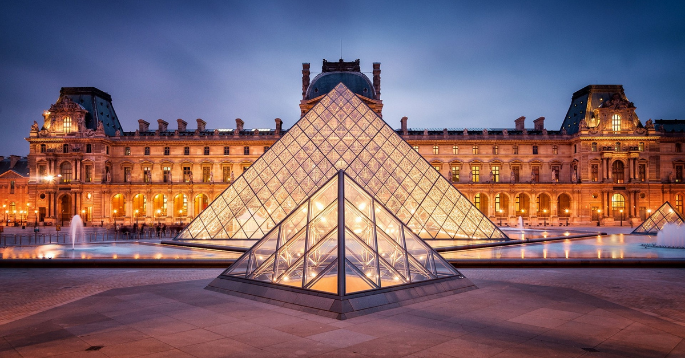

Lugares Turísticos na Europa
Coliseu

Assim como a Eiffel é o cartão postal de Paris, o Coliseu é o símbolo da capital da Itália, Roma. Com quase 2.000 anos de construído, o anfiteatro recebe anualmente cerca de 7,6 milhões de visitantes para conhecer a estrutura que atravessou milênio
Torre Eiffel

Ainda na França, a torre Eiffel, o maior cartão postal do país, é um monumento parisiense que permite chegar ao topo e tudo isso com apenas alguns cliques. No tour virtual oferecido é possível viajar por diferentes pontos da torre, de dentro ou de fora.
Museu do Louvre
Como falamos no início desse artigo, o Museu do Louvre, em Paris, na França, é um dos famosos locais que permite esse tour virtual pelas salas do museu. Inclusive, é possível visitar a sala onde está localizada a Monalisa, o famoso quadro pintado por Leonardo Da Vinci.